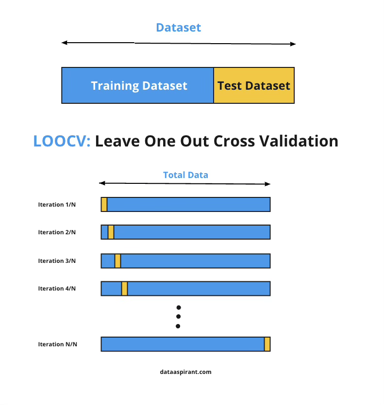
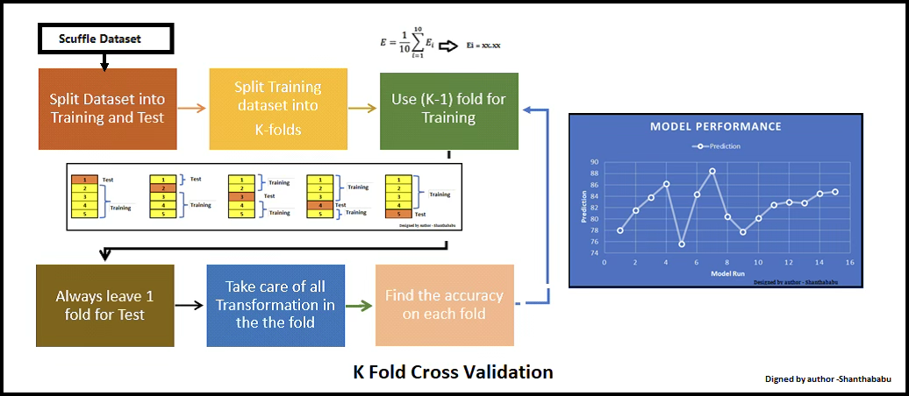
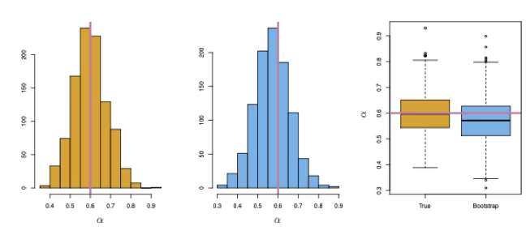

MLDL 방법론 게요
Chapter 1. 표본, 모집단 그리고 일반화
1. 모집단
통계적 학습은 모집단에 대한 가정을 출발점으로 한다. 모집단은 분석의 대상이 되는 전체를 의미하지만, 통계적 학습에서는 이를 단순한 개체들의 집합이 아니라 확률적 생성 구조로 이해한다. 즉, 설명변수와 반응변수는 일정한 확률 규칙에 따라 생성되며, 이 확률 규칙이 모집단을 규정한다.
통계적 학습에서는 설명변수 X와 반응변수 Y가 어떤 결합확률분포를 따른다고 가정한다.
\[(X,Y) \sim P_{XY}\]
이 분포는 직접 관측할 수 없으며, 오직 표본을 통해 간접적으로 추론할 수 있다. 회귀, 분류, 머신러닝, 딥러닝을 포함한 모든 학습 방법은 이 보이지 않는 확률 구조를 요약하거나 근사하는 것을 목표로 한다.
모집단을 확률분포로 이해한다는 관점은 이후에 등장하는 모든 학습 문제를 하나의 공통된 틀 안에서 다루게 해준다.
2. 표본
현실에서는 모집단 전체를 관측할 수 없기 때문에, 우리는 모집단으로부터 추출된 유한한 개수의 관측값을 사용한다. 이 관측값들의 집합을 표본이라고 한다. 표본은 모집단 분포로부터 우연히 생성된 결과로 간주되며, 다음과 같은 가정을 바탕으로 한다.
\[(x_{1},y_{1}),(x_{2},y_{2}),\ldots,(x_{n},y_{n})\overset{iid}{\sim}P_{XY}\]
이 가정은 통계적 학습 이론의 기본 전제이며, 이후에 등장하는 추론, 예측, 검증 절차의 이론적 기반이 된다. 표본의 크기와 구성은 학습 결과의 안정성과 신뢰성에 직접적인 영향을 미친다. 표본이 작을수록 우연 변동의 영향은 커지며, 동일한 방법을 적용하더라도 결과가 크게 달라질 수 있다.
중요한 점은, 표본이 아무리 많아지더라도 모집단 그 자체가 되지는 않는다는 사실이다. 데이터 분석에서 발생하는 불확실성은 대부분 이 표본과 모집단 사이의 간극에서 비롯된다.
3. 일반화
통계적 학습의 목적은 표본을 가능한 한 잘 설명하는 데 있지 않다. 학습의 궁극적인 목표는 표본을 통해 학습한 규칙이나 모형이 아직 관측하지 않은 새로운 데이터에 대해서도 잘 작동하도록 만드는 데 있다. 이를 일반화라고 한다.
학습 알고리즘은 입력 변수 X로부터 출력 변수 Y를 예측하는 함수 f(X)를 학습한다. 훈련 데이터에서 계산되는 평균 손실은 다음과 같다.
\[\frac{1}{n}\overset{n}{\sum_{i = 1}}L(y_{i},f(x_{i}))\]
이 값은 모델이 이미 관측한 데이터에 얼마나 잘 맞는지를 보여주는 지표이다. 그러나 우리가 실제로 관심을 가지는 것은 모집단 전체에서의 평균적인 성능이다. 이는 다음과 같은 기댓값으로 표현된다.
\[\mathbb{E}_{(X,Y) \sim P_{XY}}\lbrack L(Y,f(X))\rbrack\]
훈련 데이터에서의 성능과 모집단에서의 성능은 일반적으로 일치하지 않는다. 표본에 지나치게 맞춰진 모델은 새로운 데이터에 대해 성능이 급격히 저하될 수 있으며, 이를 과적합이라고 한다. 일반화는 이러한 위험을 인식하고 통제하는 개념이다.
4. 모집단에 대한 관심의 차이: 통계, 머신러닝, 딥러닝
모집단을 확률적 생성 구조로 이해한다는 점에서는 통계학, 머신러닝, 딥러닝이 동일한 출발점을 공유한다. 그러나 이들 방법론은 모집단의 무엇에 관심을 두는지에 따라 서로 다른 방향으로 발전해 왔다.
전통적인 통계학은 모집단 분포의 특정한 요약량에 주된 관심을 둔다. 평균, 분산, 회귀계수와 같은 모수는 모집단 구조를 간결하게 설명하는 핵심 요소로 간주된다. 통계적 추론의 목적은 이러한 모수를 추정하고, 그 불확실성을 정량화하는 데 있다. 이 관점에서 모델은 모집단을 설명하기 위한 수단이며, 해석 가능성이 중요한 위치를 차지한다.
머신러닝은 모집단 분포 자체의 해석보다는, 모집단으로부터 생성될 새로운 관측값에 대해 얼마나 정확한 예측을 할 수 있는지에 더 큰 관심을 둔다. 즉, 조건부 분포의 구조를 직접 해석하기보다는 예측 오차를 최소화하는 함수 f(X)를 찾는 데 초점을 맞춘다. 이 과정에서 일반화 성능은 핵심 평가 기준이 된다.
딥러닝은 머신러닝의 이러한 관점을 더욱 확장한 접근법이다. 딥러닝 모델은 모집단 분포에 대한 명시적 가정보다는, 고차원 입력 공간에서의 복잡한 함수 관계를 직접 근사하는 데 집중한다. 이때 주요 관심사는 해석 가능한 모수보다는 표현 학습과 대규모 데이터 환경에서의 예측 성능이다.
요약하면, 통계학은 모집단의 구조와 모수에, 머신러닝은 모집단에서의 예측 성능에, 딥러닝은 고차원 데이터에서의 표현과 함수 근사 능력에 더 큰 비중을 둔다. 이러한 관점의 차이는 이후 장들에서 각 방법론의 장점과 한계를 이해하는 데 중요한 기준이 된다.
Chapter 2. 손실함수와 위험
통계적 학습에서 ”모형이 얼마나 잘 작동하는가”라는 질문은 반드시 수식으로 정의되어야 한다. 그렇지 않으면 서로 다른 방법을 비교하거나, 학습의 목표를 명확히 설정할 수 없다. 손실함수와 위험은 이러한 질문에 체계적으로 답하기 위해 도입되는 개념이다. 이 절에서는 모든 학습 문제를 하나의 공통된 최소화 문제로 이해하는 관점을 소개한다.
1. 손실함수
손실함수는 예측값과 실제값 사이의 차이를 수치로 표현하는 함수이다. 학습 알고리즘은 이 손실을 기준으로 자신의 성능을 판단하며, 손실이 작을수록 더 좋은 예측을 수행한다고 간주한다.
입력 변수 X에 대해 예측 함수 f(X)를 사용한다고 하자. 관측된 실제 값이 Y일 때, 손실함수는 다음과 같은 형태를 가진다.
\[L(Y,f(X))\]
손실함수의 선택은 학습 문제의 성격에 따라 달라진다. 회귀 문제에서는 제곱오차 손실이나 절대오차 손실이 자주 사용되며, 분류 문제에서는 0–1 손실이나 로그 손실이 사용된다. 중요한 점은 손실함수가 단순한 계산 도구가 아니라, 무엇을 ”잘 맞춘다”고 볼 것인가에 대한 기준을 명확히 규정한다는 것이다.
예를 들어 제곱오차 손실은 큰 오차에 더 큰 벌점을 부여하며, 이는 평균적인 성능을 중시하는 관점을 반영한다. 반면 절대오차 손실은 이상치의 영향을 상대적으로 덜 받는다. 이처럼 손실함수는 학습의 철학을 수식으로 표현한 것이라고 볼 수 있다.
2. 경험적 위험
모집단 전체에 대해 손실을 계산하는 것은 현실적으로 불가능하다. 우리가 실제로 사용할 수 있는 정보는 유한한 표본 뿐이다. 따라서 통계적 학습에서는 표본을 이용해 손실의 평균을 계산하고, 이를 최소화하는 방향으로 학습을 수행한다.
표본 \((x_{1},y_{1}),\ldots,(x_{n},y_{n})\)이 주어졌을 때, 평균 손실은 다음과 같이 정의된다.
\[\widehat{R}(f) = \frac{1}{n}\overset{n}{\sum_{i = 1}}L(y_{i},f(x_{i}))\]
이 값을 경험적 위험이라고 한다. 경험적 위험은 관측된 데이터에 기반해 계산된 손실의 평균이며, 학습 알고리즘이 직접적으로 최소화하는 대상이다. 선형회귀의 최소제곱법, 로지스틱 회귀의 최대우도추정, 신경망 학습에서의 경사하강법은 모두 경험적 위험 최소화의 구체적인 구현이다.
그러나 경험적 위험이 작다고 해서 반드시 좋은 모델이라고 말할 수는 없다. 경험적 위험은 표본에 대한 성능만을 반영하며, 표본에 지나치게 맞춰진 모델은 새로운 데이터에 대해 나쁜 성능을 보일 수 있다. 이 지점에서 일반화 문제가 다시 등장한다.
3. 모집단 위험
우리가 궁극적으로 관심을 가지는 것은 표본이 아니라 모집단 전체에서의 평균적인 성능이다. 이를 모집단 위험이라고 하며, 다음과 같이 정의된다.
\[R(f) = \mathbb{E}_{(X,Y) \sim P_{XY}}\lbrack L(Y,f(X))\rbrack\]
모집단 위험은 예측 함수 f가 모집단 분포로부터 생성될 임의의 관측값에 대해 얼마나 잘 작동하는지를 나타내는 척도이다. 이상적으로는 이 값을 직접 최소화하는 것이 목표이지만, 모집단 분포는 알 수 없기 때문에 모집단 위험을 직접 계산할 수는 없다.
통계적 학습의 핵심 문제는 경험적 위험과 모집단 위험 사이의 관계에 있다. 표본의 크기가 충분히 크고, 모델의 복잡도가 적절히 통제된다면 경험적 위험은 모집단 위험의 좋은 근사값이 될 수 있다. 반대로 표본이 작거나 모델이 지나치게 복잡하면 두 값 사이의 차이는 커질 수 있다.
이러한 관점에서 통계적 학습은 다음과 같은 문제로 요약된다. 경험적 위험을 최소화하면서도, 모집단 위험이 함께 작아지도록 학습 과정을 설계하는 것이다. 이후 절에서 다룰 규제, 재표본 방법, 검증 기법들은 모두 이 목표를 달성하기 위한 장치들이다.
Chapter 3. Resampling과 일반화 성능 추정
앞 절에서 살펴본 바와 같이, 통계적 학습에서 우리가 직접 계산할 수 있는 것은 경험적 위험이며, 실제로 관심을 가지는 대상은 모집단 위험이다. 문제는 모집단 분포를 알 수 없기 때문에 모집단 위험을 직접 계산할 수 없다는 점이다. 여기서는 이러한 한계를 극복하기 위해 사용되는 방법인 재표본과 일반화 성능 추정의 개념을 다룬다.
1. 재표본 개념
재표본 방법(resampling methods)은 현대 통계학과 통계적 학습에서 핵심적인 역할을 하는 도구이다. 재표본 방법이란, 하나의 학습 데이터로부터 반복적으로 표본을 추출하고, 각 표본마다 동일한 통계적 모형을 다시 적합함으로써 이미 적합된 모형에 대해 추가적인 정보를 얻는 방법을 의미한다. 이러한 절차를 통해 단일 표본에 기반한 분석만으로는 파악하기 어려운 모형의 성질을 보다 체계적으로 이해할 수 있다.
예를 들어, 선형회귀 모형의 적합 결과가 얼마나 안정적인지를 평가하고자 할 때, 학습 데이터로부터 서로 다른 표본을 반복적으로 추출한 뒤 각 표본에 대해 선형회귀 모형을 적합할 수 있다. 이후 각 표본에서 얻어진 회귀 계수나 예측 성능이 서로 어느 정도 차이를 보이는지를 분석함으로써, 추정치의 변동성과 불확실성을 평가할 수 있다. 이러한 접근은 원래의 학습 표본을 한 번만 사용하여 모형을 적합하는 경우에는 얻기 어려운 정보를 제공한다.
재표본 방법은 동일한 통계적 방법을 서로 다른 데이터 부분집합에 대해 여러 번 반복 적용해야 하므로 계산 비용이 큰 방법으로 인식되기도 한다. 그러나 최근 계산 자원의 발전으로 인해, 재표본 방법에 필요한 계산량은 대부분의 응용 문제에서 실질적인 제약이 되지 않는다. 이에 따라 재표본 방법은 이론적 논의에 머무르지 않고, 실제 데이터 분석과 통계적 학습 문제에서 널리 활용되고 있다.
가장 단순한 재표본 방법은 주어진 표본을 두 부분으로 나누는 방식이다. 일반적으로 하나는 학습용 데이터로, 다른 하나는 평가용 데이터로 사용되며, 이를 hold-out 방법이라고 한다. 이 방법은 구현이 간단하고 계산 비용이 적다는 장점이 있지만, 데이터 분할 방식에 따라 평가 결과가 크게 달라질 수 있다는 한계를 가진다. 특히 표본의 크기가 작은 경우에는 우연한 분할로 인해 일반화 성능이 과대 또는 과소 평가될 위험이 있다.
본 장에서는 재표본 방법 가운데 가장 널리 사용되는 두 가지 방법인 교차검증과 부트스트랩을 다룬다. 이 두 방법은 다양한 통계적 학습 절차를 실제로 적용하는 과정에서 중요한 도구로 활용된다. 교차검증은 특정 통계적 학습 방법의 일반화 성능, 즉 테스트 오차를 추정하는 데 사용되며, 동시에 모형의 적절한 복잡도나 유연성 수준을 선택하는 데에도 활용된다. 모형의 예측 성능을 평가하는 과정을 모형 평가라고 하며, 여러 후보 모형 가운데 적절한 모형을 선택하는 과정을 모형 선택이라고 한다.
한편, 부트스트랩은 여러 상황에서 활용되는 재표본 방법으로, 특히 모수 추정치의 정확도와 변동성을 평가하는 데 자주 사용된다. 또한 특정 통계적 학습 방법이 표본의 변동에 얼마나 민감한지를 파악하는 데에도 유용하다. 이처럼 재표본 방법은 일반화 성능의 평가와 추정의 불확실성 분석을 연결하는 중요한 역할을 수행한다.
2. 일반화 성능 추정의 필요성
학습된 모형의 성능을 평가하는 가장 단순한 방법은 훈련 데이터에서의 평균 손실을 계산하는 것이다. 이 값은 모형이 주어진 학습 데이터에 얼마나 잘 적합되었는지를 보여주는 지표로서 의미를 가진다. 그러나 훈련 데이터에서의 성능이 우수하다는 사실만으로, 해당 모형이 새로운 데이터에 대해서도 동일한 수준의 성능을 보일 것이라고 기대할 수는 없다.
특히 모형의 복잡도가 증가할수록 이러한 문제는 더욱 두드러진다. 복잡한 모형은 훈련 데이터의 패턴을 정교하게 따라갈 수 있기 때문에 훈련 오차를 매우 작게 만들 수 있다. 그러나 이 과정에서 표본에 포함된 우연한 변동까지 함께 학습하게 되면, 새로운 데이터에 대해서는 오히려 예측 성능이 저하될 수 있다. 이와 같은 현상은 통계적 학습에서 과적합으로 알려져 있으며, 일반화 성능을 평가할 필요성을 분명하게 보여준다.
통계적 학습의 관점에서 중요한 것은 훈련 데이터에 대한 적합도가 아니라, 아직 관측되지 않은 데이터에 대한 평균적인 성능이다. 즉, 학습된 모형이 모집단으로부터 새롭게 생성될 관측값에 대해 얼마나 안정적으로 작동하는지를 평가해야 한다. 이를 일반화 성능 추정이라고 한다.
이상적으로는 훈련 데이터와는 독립적인 새로운 데이터를 이용하여 모형의 성능을 평가하는 것이 바람직하다. 그러나 현실적인 분석 상황에서는 이러한 별도의 데이터셋을 확보하기가 쉽지 않다. 따라서 통계적 학습에서는 하나의 표본을 여러 방식으로 나누거나 반복적으로 재구성하여, 새로운 데이터가 주어졌을 때의 상황을 간접적으로 모의하는 방법을 사용한다.
이러한 접근법이 바로 재표본 방법이며, 재표본은 일반화 성능을 추정하기 위한 실질적인 도구로 사용된다. 즉, 재표본 방법은 단순한 계산 기법이 아니라, 훈련 오차와 모집단 성능 사이의 간극을 줄이기 위한 핵심적인 방법론이다.
3. 재표본의 기본 아이디어
재표본 방법의 핵심 아이디어는 하나의 표본을 고정된 데이터셋으로 취급하지 않고, 모집단으로부터 추출될 수 있는 여러 가능한 표본 가운데 하나로 간주하는 데 있다. 즉, 현재 관측된 데이터는 모집단으로부터 우연히 생성된 결과이며, 동일한 모집단에서라면 다른 표본이 관측될 수도 있었음을 전제로 한다.
이러한 관점에서 재표본 방법은 주어진 데이터셋을 여러 방식으로 나누거나, 혹은 중복을 허용하여 다시 추출함으로써, 새로운 데이터가 관측되는 상황을 간접적으로 모의한다. 이를 통해 하나의 표본만을 사용했을 때는 관찰하기 어려운 학습 결과의 변동성과 불확실성을 평가할 수 있다.
재표본 과정에서는 일반적으로 데이터의 일부를 모형 학습에 사용하고, 나머지를 모형 평가에 사용한다. 학습에 사용되지 않은 데이터는 훈련 과정에 관여하지 않기 때문에, 새로운 데이터에 대한 관측값과 유사한 역할을 한다. 이 평가 데이터에서 계산된 손실은, 모형이 실제로 새로운 데이터에 대해 보일 성능을 간접적으로 반영한다.
중요한 점은, 재표본 방법이 새로운 정보를 인위적으로 만들어내는 것이 아니라, 동일한 표본을 서로 다른 역할로 반복적으로 활용함으로써 일반화 성능을 추정한다는 점이다. 이러한 절차를 통해 통계적 학습은 훈련 오차와 모집단 성능 사이의 간극을 보다 현실적으로 이해할 수 있게 된다.
이 기본 아이디어를 구체화한 것이 이후에 다룰 hold-out 방법, 교차검증, 그리고 부트스트랩이다. 각 방법은 재표본을 구성하는 방식과 평가 전략에서 차이를 보이지만, 모두 일반화 성능을 추정하기 위한 공통된 목적을 공유한다.
Chapter 4. 재표본 방법
1. 훈련 오차, 테스트 오차 그리고 재표본
회귀 문제를 중심으로 다루어진 편향–분산 트레이드오프와 같은 핵심 개념은 분류 문제에도 거의 그대로 적용된다. 분류 문제에서 차이가 있다면 반응변수가 연속형이 아니라 범주형이라는 점이며, 이에 따라 성능을 측정하는 방식이 오차율(error rate)의 형태로 정의된다는 점이다.
훈련 관측값 \(\{(x_{1},y_{1}),\ldots,(x_{n},y_{n})\}\)을 이용하여 분류기 \(\widehat{f}\)를 학습했다고 하자. 이때 분류기의 성능을 가장 간단하게 평가하는 방법은 훈련 데이터에 대해 발생한 오분류의 비율을 계산하는 것이다. 이를 훈련 오차율(training error rate)이라 하며, 다음과 같이 정의된다.
\[\frac{1}{n}\overset{n}{\sum_{i = 1}}I(y_{i} \neq {\widehat{y}}_{i})\]
여기서 \({\widehat{y}}_{i}\)는 i번째 관측값에 대해 분류기가 예측한 범주 레이블이고,
\(I(y_{i} \neq {\widehat{y}}_{i})\)는 실제 값과 예측 값이 다를 경우 1, 같을 경우 0을 취하는 지시변수이다. 따라서 훈련 오차율은 학습에 사용된 데이터 중 잘못 분류된 관측값의 비율을 의미한다.
훈련 오차율은 계산이 간단하고 항상 구할 수 있다는 장점이 있다. 그러나 통계적 학습의 관점에서 훈련 오차는 모형의 실제 성능을 평가하는 데 적합한 지표라고 보기는 어렵다. 이는 훈련 오차가 이미 관측한 데이터에 대해 계산된 값이기 때문이다. 특히 모형의 복잡도가 높아질수록, 모형은 데이터의 일반적인 구조뿐 아니라 표본에 포함된 우연한 변동까지 학습할 수 있으며, 그 결과 훈련 오차는 지나치게 작아질 수 있다.
우리가 실제로 관심을 가지는 것은 학습에 사용되지 않은 새로운 관측값에 대해 분류기가 얼마나 잘 작동하는가이다. 이러한 관점에서 정의되는 성능 지표가 테스트 오차율(test error rate)이다. 테스트 관측값 \((x_{0},y_{0})\)에 대해 테스트 오차율은 다음과 같이 정의된다.
\[\text{Ave}(I(y_{0} \neq {\widehat{y}}_{0}))\]
여기서 \({\widehat{y}}_{0}\)는 새로운 입력 \(x_{0}\)에 대해 분류기가 예측한 범주 레이블이다. 좋은 분류기란 훈련 오차가 작은 분류기가 아니라, 테스트 오차가 작은 분류기이다. 즉, 통계적 학습의 궁극적인 목표는 훈련 데이터에 대한 적합도를 높이는 것이 아니라, 새로운 데이터에 대한 오차를 최소화하는 데 있다.
문제는 테스트 오차율이 정의상 학습에 사용되지 않은 데이터에 대해 계산되는 값이라는 점이다. 모집단 분포를 알 수 없는 현실적인 상황에서는 충분히 큰 테스트 데이터셋을 확보하기가 어렵고, 따라서 테스트 오차를 직접 계산하는 것은 대부분의 경우 불가능하다. 이로 인해 훈련 오차와 테스트 오차 사이에는 본질적인 간극이 존재한다.
이 간극을 메우기 위해 등장한 방법이 재표본(resampling) 방법이다. 재표본 방법은 훈련 데이터의 일부를 의도적으로 학습 과정에서 제외한 뒤, 이를 새로운 데이터인 것처럼 사용하여 오차를 계산한다. 이렇게 계산된 오차는 훈련 오차보다 덜 낙관적이며, 테스트 오차에 대한 추정치로 해석될 수 있다.
요약하면, 훈련 오차는 항상 계산 가능하지만 일반화 성능을 과대평가하는 경향이 있고, 테스트 오차는 우리가 진정으로 최소화하고자 하는 대상이지만 직접 계산할 수 없다. 재표본 방법은 이 둘 사이의 간극을 체계적으로 연결함으로써, 유한한 표본만을 이용해 일반화 성능을 평가할 수 있게 해주는 통계적 학습의 핵심 도구이다.
2. 교차검증
(1) 개념
테스트 오차는 통계적 학습 방법을 사용하여 새로운 관측값, 즉 모형 학습에 사용되지 않은 데이터에 대한 반응변수를 예측할 때 발생하는 평균적인 오차를 의미한다. 주어진 데이터셋에 대해 특정 통계적 학습 방법을 사용하는 것이 타당하다고 판단되기 위해서는 테스트 오차가 작아야 한다.
만약 별도의 테스트 데이터셋이 존재한다면, 테스트 오차는 비교적 쉽게 계산할 수 있다. 그러나 현실적인 분석 상황에서는 이러한 테스트 데이터가 충분히 확보되는 경우가 드물다. 반면, 훈련 오차는 학습에 사용된 관측값에 동일한 통계적 학습 방법을 적용함으로써 쉽게 계산할 수 있다. 하지만 훈련 오차는 테스트 오차와 상당히 다를 수 있으며, 특히 테스트 오차를 크게 과소추정하는 경향이 있다.
충분히 큰 테스트 데이터셋이 없어 테스트 오차를 직접 추정할 수 없는 경우, 이용 가능한 훈련 데이터를 활용하여 테스트 오차를 추정하는 다양한 방법들이 사용된다. 본 절에서는 학습 과정에서 일부 관측값을 의도적으로 제외한 뒤, 해당 관측값에 대해 모형을 적용함으로써 테스트 오차를 추정하는 방법들을 살펴본다.
(2) 검증 세트 방법 (The Validation Set Approach)
특정 통계적 학습 방법을 하나의 데이터셋에 적용할 때 발생하는 테스트 오차를 추정하고자 한다고 가정하자.
검증 세트 방법은 사용 가능한 관측값들을 무작위로 두 부분으로 나누는 절차를 포함한다. 하나는 학습용 데이터셋(training set)이고, 다른 하나는 검증 데이터셋(validation set), 또는 홀드아웃 세트(hold-out set)이다. 모형은 학습 데이터셋을 이용해 적합되며, 적합된 모형은 검증 데이터셋에 포함된 관측값들의 반응변수를 예측하는 데 사용된다. 이때 계산된 검증 세트 오차율은, 연속형 반응변수의 경우 일반적으로 평균제곱오차(MSE)를 사용하여 측정되며, 테스트 오차에 대한 추정치를 제공한다.

예제 자료 Auto 데이터셋에 적용하면, mpg와 horsepower 사이의 비선형적 관계를 고려할 때 단순 선형 회귀보다 다항 회귀 모형이 더 적절한지 평가할 수 있다. 이를 위해 전체 392개의 관측값을 무작위로 학습 세트와 검증 세트로 나눈 뒤, 다양한 차수의 다항 회귀 모형을 학습 데이터에 적합하고 검증 데이터에서 평균제곱오차로 성능을 비교한다. 그 결과, 이차 다항 모형은 선형 모형에 비해 검증 세트 MSE가 크게 감소하였으나, 삼차 이상의 다항항을 추가해도 예측 성능은 더 이상 개선되지 않는 것으로 나타났다.
한편, 검증 세트 방법은 데이터 분할 방식에 따라 성능 추정 결과가 달라질 수 있다는 한계를 가진다. 서로 다른 무작위 분할을 반복하면 각 경우마다 검증 세트 MSE가 달라지며, 어떤 모형이 최적이라고 단정하기는 어렵다. 그럼에도 불구하고 반복된 결과를 종합하면, 선형 모형이 이 데이터에 적합하지 않다는 점만큼은 일관되게 확인된다.
검증 세트 방법은 개념적으로 단순하고 구현이 쉽다는 장점을 지닌다. 그러나 두 가지 잠재적인 단점이 존재한다.
첫째, 검증 세트 오차 추정치는 어떤 관측값이 학습 데이터에 포함되고 어떤 관측값이 검증 데이터에 포함되는지에 따라 크게 달라질 수 있다.
둘째, 검증 세트 방법에서는 전체 데이터 중 일부만을 사용하여 모형을 학습한다. 일반적으로 통계적 방법은 더 많은 관측값을 사용하여 학습할수록 성능이 향상되므로, 검증 세트 오차는 전체 데이터를 사용하여 학습한 모형의 테스트 오차를 과대추정하는 경향이 있다.
(3) 하나를 제외한 교차검증 (Leave-One-Out Cross-Validation)

검증 세트 방법과 마찬가지로, LOOCV 역시 전체 관측값을 두 부분으로 나누어 사용한다. 그러나 검증 세트 방법에서 두 부분이 비교적 비슷한 크기를 갖는 것과 달리, LOOCV에서는 단 하나의 관측값 \((x_{1},y_{1})\)만을 검증 데이터로 사용하고, 나머지 n-1개의 관측값 \(\{(x_{2},y_{2}),\ldots,(x_{n},y_{n})\}\)을 학습 데이터로 사용한다. 통계적 학습 방법은 이 n-1개의 관측값에 대해 적합되며, 제외된 관측값에 대해 예측값 \({\widehat{y}}_{1}\)이 계산된다.
이때 \((x_{1},y_{1})\)은 학습 과정에 사용되지 않았으므로, \(\text{MSE}_{1} = (y_{1} - {\widehat{y}}_{1})^{2}\)은 테스트 오차에 대한 거의 비편향(unbiased) 추정값으로 해석할 수 있다. 그러나 \(\text{MSE}_{1}\)은 단 하나의 관측값에 기반한 값이므로 변동성이 매우 크며, 그 자체로는 신뢰할 만한 추정치라고 보기 어렵다.
이 과정을 두 번째 관측값 \((x_{2},y_{2})\)에 대해서도 반복할 수 있다. 즉, \((x_{2},y_{2})\)를 검증 데이터로 두고, 나머지 n-1개의 관측값 \(\{(x_{1},y_{1}),(x_{3},y_{3}),\ldots,(x_{n},y_{n})\}\)을 학습 데이터로 사용하여 모형을 적합한 뒤, \(\text{MSE}_{2} = (y_{2} - {\widehat{y}}_{2})^{2}\)를 계산한다. 이와 같은 절차를 모든 관측값에 대해 반복하면, 총 n개의 제곱오차 \(\text{MSE}_{1},\ldots,\text{MSE}_{n}\)를 얻게 된다.
LOOCV에서의 테스트 평균제곱오차 추정치는 이 값들의 평균으로 정의된다.
\[\text{CV}_{(n)} = \frac{1}{n}\overset{n}{\sum_{i = 1}}\text{MSE}_{i}\]
LOOCV는 검증 세트 방법에 비해 몇 가지 중요한 장점을 가진다. 첫째, 편향이 훨씬 작다. LOOCV에서는 매번 n-1개의 관측값을 사용하여 모형을 학습하므로, 이는 전체 데이터셋을 사용한 경우와 거의 동일한 규모의 학습에 해당한다. 반면 검증 세트 방법에서는 학습 데이터가 전체 데이터의 절반 정도로 줄어드는 경우가 많아, 테스트 오차를 과대추정하는 경향이 있다. 이러한 이유로 LOOCV는 검증 세트 방법보다 테스트 오차에 대한 편향이 훨씬 작다.
둘째, LOOCV는 반복 수행 시 항상 동일한 결과를 제공한다. 검증 세트 방법은 학습/검증 데이터 분할이 무작위로 이루어지기 때문에, 분할 방식에 따라 결과가 달라질 수 있다. 반면 LOOCV에서는 각 관측값이 정확히 한 번씩 검증 데이터로 사용되므로, 분할에 따른 임의성이 존재하지 않는다.
LOOCV의 단점은 계산 비용이 크다는 점이다. LOOCV에서는 모형을 총 n번 적합해야 하므로, 관측값의 수가 크거나 각 모형의 적합에 많은 시간이 소요되는 경우 계산 부담이 매우 커질 수 있다.
그러나 최소제곱 선형 회귀나 다항 회귀의 경우에는 놀라운 계산적 단축 방법이 존재하여, LOOCV의 계산 비용을 단일 모형 적합과 거의 동일한 수준으로 줄일 수 있다. 이 경우 다음 식이 성립한다.
\(\text{CV}_{(n)} = \frac{1}{n}\overset{n}{\sum_{i = 1}}\left( \frac{y_{i} - {\widehat{y}}_{i}}{1 - h_{i}} \right)^{2}\), 여기서 \({\widehat{y}}_{i}\)는 전체 데이터에 대해 적합한 최소제곱 회귀모형에서의 i번째 적합값이며, \(h_{i}\)는 레버리지(leverage) 값이다. 레버리지는 1/n과 1 사이의 값을 가지며, 특정 관측값이 자기 자신의 적합값에 얼마나 큰 영향을 미치는지를 나타낸다. 이 식에서는 레버리지가 큰 관측값에 대한 잔차가 적절히 보정되어 반영된다.
LOOCV는 매우 일반적인 방법으로, 로지스틱 회귀나 선형 판별분석 등 다양한 예측 모형에 적용할 수 있다.
(4) k-겹 교차검증 (k-Fold Cross-Validation)

LOOCV의 대안으로 k-겹 교차검증(k-fold CV)이 있다. 이 방법은 전체 관측값 집합을 크기가 거의 같은 k개의 그룹, 즉 폴드(fold)로 무작위 분할하는 절차를 포함한다. 첫 번째 폴드를 검증 세트로 사용하고, 나머지 k-1개의 폴드를 학습 세트로 사용하여 통계적 학습 방법을 적합한다. 이후 제외된 폴드에 포함된 관측값들에 대해 평균제곱오차 \(\text{MSE}_{1}\)를 계산한다.
이 절차를 총 k번 반복하며, 매번 서로 다른 폴드가 검증 세트로 사용된다. 그 결과 테스트 오차에 대한 k개의 추정값 \(\text{MSE}_{1},\text{MSE}_{2},\ldots,\text{MSE}_{k}\)를 얻게 된다. k-겹 교차검증에 의한 테스트 오차 추정치는 이 값들의 평균으로 정의된다.
\[\text{CV}_{(k)} = \frac{1}{k}\overset{k}{\sum_{i = 1}}\text{MSE}_{i}\]
LOOCV는 k=n인 k-겹 교차검증의 특수한 경우로 볼 수 있다. 실제 응용에서는 보통 k=5 또는 k=10을 사용한다. 그렇다면 k=n 대신 k=5나 k=10을 사용하는 장점은 무엇일까? 가장 분명한 장점은 계산 효율성이다. LOOCV는 학습 방법을 총 n번 적합해야 하므로, 계산 비용이 매우 클 수 있다. 반면 10-겹 교차검증은 학습을 10번만 수행하면 되므로, 훨씬 현실적인 계산 비용으로 적용할 수 있다.
교차검증을 수행하는 목적은 상황에 따라 다를 수 있다. 어떤 경우에는 독립적인 데이터에 대해 해당 학습 방법이 얼마나 잘 작동할지를 평가하기 위해 테스트 MSE의 정확한 추정치에 관심을 가질 수 있다. 그러나 다른 경우에는 여러 학습 방법이나 동일한 방법의 서로 다른 유연성 수준을 비교하여, 테스트 오차를 최소화하는 설정을 선택하는 것이 목적일 수 있다. 이 경우에는 추정된 테스트 MSE의 정확한 값보다는, 테스트 MSE 곡선에서 최소점이 위치하는 지점이 더 중요하다.
교차검증 곡선이 때로는 참된 테스트 MSE를 과소 또는 과대추정하더라도, 대부분의 경우 테스트 MSE를 최소화하는 유연성 수준을 비교적 정확하게 식별해 준다. 이는 교차검증이 모형 선택을 위한 도구로서 매우 효과적임을 의미한다.
k-겹 교차검증에서의 편향–분산 절충
k<n인 k-겹 교차검증이 LOOCV에 비해 계산상 유리하다는 점을 언급하였다. 그러나 계산 비용을 제외하더라도, k-겹 교차검증이 LOOCV보다 테스트 오차율을 더 정확하게 추정하는 경우가 많다는 점은 덜 직관적이지만 잠재적으로 더 중요한 장점이다. 이는 k-겹 교차검증에서 나타나는 편향–분산 절충과 관련이 있다.
LOOCV에서는 각 학습 세트가 n-1개의 관측값을 포함하므로, 전체 데이터셋의 크기와 거의 동일한 규모로 학습이 이루어진다. 따라서 LOOCV는 테스트 오차에 대해 거의 비편향에 가까운 추정치를 제공한다. 반면, k=5 또는 k=10과 같은 k-겹 교차검증에서는 각 학습 세트가 대략 (k-1)n/k개의 관측값을 포함하므로, LOOCV보다는 적지만 검증 세트 방법보다는 훨씬 많은 데이터를 사용하게 된다. 이로 인해 k-겹 교차검증은 편향의 관점에서 중간 정도의 특성을 갖는다. 따라서 편향을 최소화하는 측면에서는 LOOCV가 k-겹 교차검증보다 유리하다고 할 수 있다.
그러나 오차 추정에서 편향만이 유일한 고려 요소는 아니다. 분산 또한 중요한 역할을 한다. 실제로 LOOCV는 k<n인 k-겹 교차검증보다 더 큰 분산을 가지는 것으로 알려져 있다. 그 이유는 LOOCV에서 평균을 내는 대상이 되는 n개의 모형들이 거의 동일한 학습 데이터를 사용하여 적합되기 때문이다. 이 경우 각 모형의 결과는 서로 강한 양의 상관관계를 가지게 되며, 이러한 상관된 값들의 평균은 분산이 크게 나타난다.
반면, k<n인 k-겹 교차검증에서는 각 모형의 학습 세트 간 중복이 상대적으로 적어, 서로 다른 모형들의 결과가 LOOCV에 비해 덜 상관되어 있다. 일반적으로 서로 높은 상관을 가지는 값들의 평균은, 상관이 낮은 값들의 평균보다 분산이 더 크다. 이로 인해 LOOCV에서 얻은 테스트 오차 추정치는 k-겹 교차검증에서 얻은 추정치보다 분산이 더 크게 나타나는 경향이 있다.
요약하면, k-겹 교차검증에서 k의 선택에는 명확한 편향–분산 절충이 존재한다. 일반적으로 이러한 점들을 종합적으로 고려할 때, k=5 또는 k=10을 사용하는 것이 경험적으로 바람직한 것으로 알려져 있다. 이러한 값들은 과도하게 큰 편향이나 매우 큰 분산을 동시에 피하면서, 안정적인 테스트 오차 추정치를 제공하는 것으로 확인되어 왔다.
(5) 분류 문제에서의 교차검증
지금까지 이 장에서는 반응변수 Y가 연속형인 회귀 문제를 중심으로 교차검증의 사용법을 설명하였으며, 테스트 오차를 정량화하기 위해 평균제곱오차(MSE)를 사용하였다. 그러나 반응변수가 범주형인 분류 문제에서도 교차검증은 매우 유용한 방법이 될 수 있다. 이 경우에도 교차검증의 절차 자체는 앞서 설명한 내용과 동일하며, 다만 테스트 오차를 측정하는 지표만 달라진다. 즉, 분류 문제에서는 MSE 대신 잘못 분류된 관측값의 개수를 사용하여 오차를 정의한다.
예를 들어 분류 문제에서 LOOCV에 의한 오차율은 다음과 같은 형태를 갖는다.
\(\text{CV}_{(n)} = \frac{1}{n}\overset{n}{\sum_{i = 1}}\text{Err}_{i}\), 여기서 \(\text{Err}_{i} = I(y_{i} \neq {\widehat{y}}_{i})\)이며, 이는 i번째 관측값이 잘못 분류되었을 경우 1, 올바르게 분류되었을 경우 0의 값을 갖는 지시변수이다. k-겹 교차검증과 검증 세트 방법에서의 분류 오차율 역시 이와 동일한 방식으로 정의된다.
로지스틱 회귀는 회귀 문제에서와 마찬가지로 설명변수의 다항 함수를 포함시켜 비선형 결정경계를 갖도록 확장할 수 있다. 예를 들어, 다음과 같은 이차 로지스틱 회귀 모형을 고려할 수 있다.
\[\log\left( \frac{p}{1 - p} \right) = \beta_{0} + \beta_{1}X_{1} + \beta_{2}X_{1}^{2} + \beta_{3}X_{2} + \beta_{4}X_{2}^{2}\]
실제 데이터 분석 상황에서는 베이즈 결정경계나 참된 테스트 오차율을 알 수 없다. 아래 제시된 네 가지 로지스틱 회귀 모형 중 어떤 모형을 선택해야 할지를 판단하는 문제는 교차검증을 통해 해결할 수 있다.

아래 제시된 이차원 분류 데이터에 대해 계산된 테스트 오차(갈색), 훈련 오차(파란색), 그리고 10-겹 교차검증 오차(검은색)를 나타낸 것이다. 왼쪽 패널은 설명변수들의 다항함수를 사용한 로지스틱 회귀 모형의 결과를 보여주며, 가로축에는 사용된 다항식의 차수가 표시되어 있다. 오른쪽 패널은 서로 다른 K 값에 대한 KNN 분류기의 결과를 나타내며, 여기서 K는 KNN 분류기에 사용된 이웃의 수를 의미한다.

(6) 분류 문제에서의 교차검증 오차 지표
분류 문제에서 교차검증의 목적은 학습에 사용되지 않은 새로운 관측값에 대해 분류기가 얼마나 잘 작동하는지를 평가하는 데 있다. 이를 위해 회귀 문제에서 평균제곱오차(MSE)를 사용하듯, 분류 문제에서는 반응변수의 특성에 맞는 오차 지표를 사용한다. 어떤 지표를 선택하느냐에 따라 교차검증의 해석과 모형 선택 결과가 달라질 수 있다.
1. 오차율 (Misclassification Error Rate)
가장 직관적이고 널리 사용되는 분류 오차 지표는 오차율이다. 오차율은 전체 관측값 중에서 잘못 분류된 비율로 정의된다.
\[\text{Error Rate} = \frac{1}{n}\overset{n}{\sum_{i = 1}}I(y_{i} \neq {\widehat{y}}_{i})\]
여기서 \(I( \cdot )\)는 지시변수이며, 예측값과 실제 값이 다를 경우 1, 같을 경우 0을 취한다. 교차검증에서는 각 검증 세트에서 계산된 오차율을 평균하여 테스트 오차율의 추정치로 사용한다.
오차율은 해석이 매우 간단하다는 장점이 있으나, 예측 확률의 크기나 불확실성은 반영하지 못한다. 예를 들어, 매우 확신을 가지고 틀린 예측과 거의 우연에 가까운 예측 실패를 동일하게 취급한다는 한계를 가진다.
2. 로그손실 (Log Loss, Cross-Entropy Loss)
로그손실은 분류기가 출력한 확률 예측의 품질을 평가하는 지표로, 특히 확률 기반 분류기에서 중요하다. 이항 분류의 경우 로그손실은 다음과 같이 정의된다.
\[\text{Log Loss} = - \frac{1}{n}\overset{n}{\sum_{i = 1}}\left\lbrack y_{i}\log({\widehat{p}}_{i}) + (1 - y_{i})\log(1 - {\widehat{p}}_{i}) \right\rbrack\]
여기서 \({\widehat{p}}_{i} = P(Y = 1 \mid X = x_{i})\)는 분류기가 예측한 확률이다. 다중 분류의 경우에는 softmax 출력과 함께 일반화된 형태의 교차엔트로피 손실을 사용한다.
로그손실은 잘못된 예측뿐만 아니라, 얼마나 확신을 가지고 예측했는지까지 함께 반영한다. 따라서 확률 추정이 중요한 문제, 예를 들어 위험 예측이나 의사결정 문제에서 특히 유용하다. 반면 값의 크기가 직관적으로 해석되기 어렵다는 단점이 있다.
3. 이진 교차엔트로피와 다중 클래스 교차엔트로피
로그손실은 신경망과 같은 딥러닝 분류 모형에서 손실함수로 직접 사용되며, 교차검증에서도 동일한 기준으로 활용된다.
- 이진 분류: Binary Cross-Entropy
- 다중 분류: Categorical Cross-Entropy
교차검증에서는 각 폴드에서 계산된 교차엔트로피 손실을 평균하여 테스트 손실의 추정치로 사용한다. 이 지표는 오차율보다 미세한 모형 차이를 감지하는 데 유리하다.
4. ROC-AUC 기반 지표
ROC 곡선 아래 면적(AUC)은 분류 임계값에 의존하지 않는 성능 지표로, 확률 예측의 순위 품질을 평가한다. 교차검증에서는 각 폴드에서 AUC를 계산한 뒤 평균 AUC를 사용한다.
AUC는 클래스 불균형 문제가 있는 경우에도 비교적 안정적인 지표라는 장점이 있다. 다만 이는 엄밀한 의미의 손실 함수는 아니며, 직접적인 확률 예측 오차를 측정하지는 않는다.
5. Precision, Recall, F1-score 기반 지표
불균형 데이터에서 단순 오차율은 오해를 불러일으킬 수 있으므로, 정밀도(precision), 재현율(recall), 그리고 이들의 조화평균인 F1-score가 사용된다. 교차검증에서는 각 폴드에서 해당 지표를 계산하고 평균값을 사용한다.
이들 지표는 특정 클래스에 대한 성능을 강조하고자 할 때 유용하지만, 하나의 단일 손실 함수로 해석하기는 다소 어렵다.
3. 부트스트랩
부트스트랩은 주어진 추정량이나 통계적 학습 방법에 수반되는 불확실성을 정량화하는 데 사용할 수 있는, 매우 강력하고 폭넓게 적용 가능한 통계적 도구이다. 간단한 예로, 부트스트랩은 선형회귀 모형에서 회귀계수의 표준오차를 추정하는 데 사용될 수 있다. 그러나 선형회귀의 경우에는 \통계 소프트웨어가 이러한 표준오차를 자동으로 제공하므로, 부트스트랩의 활용 가치가 크지 않을 수 있다. 그럼에도 불구하고 부트스트랩의 진정한 장점은, 통계 소프트웨어가 자동으로 변동성 정보를 제공하지 않거나 이론적 계산이 어려운 다양한 통계적 학습 방법에도 손쉽게 적용할 수 있다는 점에 있다.
이제 두 개의 금융 자산 X와 Y에 고정된 금액을 투자한다고 가정하자. 이때 X와 Y는 각각 확률변수로서 수익률을 나타낸다. 우리는 전체 투자금의 \(\alpha\) 비율을 자산 X에 투자하고, 나머지 \(1 - \alpha\)를 자산 Y에 투자한다. 두 자산의 수익률에는 변동성이 존재하므로, 우리는 투자 전체의 위험, 즉 분산을 최소화하는 \(\alpha\)를 선택하고자 한다. 이는 다음 분산을 최소화하는 문제로 표현된다.
\(\text{Var}(\alpha X + (1 - \alpha)Y)\). 이 분산을 최소화하는 \(\alpha\)는 다음과 같이 주어진다. \(\alpha = \frac{\sigma_{Y}^{2} - \sigma_{XY}}{\sigma_{X}^{2} + \sigma_{Y}^{2} - 2\sigma_{XY}}\), 여기서 \(\sigma_{X}^{2} = \text{Var}(X),\sigma_{Y}^{2} = \text{Var}(Y),\sigma_{XY} = \text{Cov}(X,Y)\)이다.
현실적으로 \(\sigma_{X}^{2},\sigma_{Y}^{2},\sigma_{XY}\)는 알려져 있지 않다. 대신 우리는 과거의 X와 Y 수익률을 포함한 데이터셋을 이용해 이들에 대한 추정값 \({\widehat{\sigma}}_{X}^{2},{\widehat{\sigma}}_{Y}^{2},{\widehat{\sigma}}_{XY}\)를 계산할 수 있다. 이를 대입하면, 투자 분산을 최소화하는 \(\alpha\)의 추정값은 다음과 같이 얻어진다.
\[\widehat{\alpha} = \frac{{\widehat{\sigma}}_{Y}^{2} - {\widehat{\sigma}}_{XY}}{{\widehat{\sigma}}_{X}^{2} + {\widehat{\sigma}}_{Y}^{2} - 2{\widehat{\sigma}}_{XY}}\]
이제 우리는 \(\widehat{\alpha}\)의 정확도를 정량화하고자 한다. 이를 위해, X와 Y의 관측값 100쌍을 생성하고 \(\widehat{\alpha}\)를 계산하는 과정을 1,000번 반복하였다. 그 결과 1,000개의 \(\widehat{\alpha}\) 추정값을 얻을 수 있다. 이들 추정값의 평균은
\(\overline{\alpha} = \frac{1}{1000}\overset{1000}{\sum_{r = 1}}{\widehat{\alpha}}_{r}\), 추정값들의 표준편차는 \(\sqrt{\frac{1}{1000 - 1}\overset{1000}{\sum_{r = 1}}({\widehat{\alpha}}_{r} - \overline{\alpha})^{2}}\)으로 계산된다.
그러나 실제 데이터 분석에서는 이러한 모의실험 절차를 수행할 수 없다. 현실에서는 모집단으로부터 새로운 표본을 반복적으로 생성할 수 없기 때문이다. 이때 부트스트랩 접근법은 컴퓨터를 이용해 새로운 표본을 생성하는 과정을 모의함으로써, 추가적인 데이터 없이도 \(\widehat{\alpha}\)의 변동성을 추정할 수 있게 해준다.
부트스트랩 알고리즘 요약
부트스트랩은 하나의 관측 데이터셋을 이용해 표본 추출 과정을 반복적으로 모의함으로써, 추정량의 변동성과 불확실성을 평가하는 방법이다. 절차는 다음과 같이 정리할 수 있다.
1단계: 원자료 준비
크기 n인 원래 데이터셋 \(Z = \{(x_{1},y_{1}),\ldots,(x_{n},y_{n})\}\)을 준비한다. 이 데이터는 모집단으로부터 추출된 하나의 표본으로 간주한다.
2단계: 부트스트랩 표본 생성
원자료 Z로부터 크기 n의 표본을 복원추출하여 하나의 부트스트랩 데이터셋 \(Z^{*1}\)을 생성한다. 이때 동일한 관측값이 여러 번 선택될 수도 있고, 어떤 관측값은 전혀 선택되지 않을 수도 있다.
3단계: 관심 통계량 계산
부트스트랩 표본 \(Z^{*1}\)을 이용해 관심 있는 통계량 또는 추정량 \({\widehat{\theta}}^{*1}\)을 계산한다. 예를 들어 회귀계수, 예측값, 최적 파라미터 등이 이에 해당한다.
4단계: 반복 수행
2단계와 3단계를 총 B번 반복하여, \({\widehat{\theta}}^{*1},{\widehat{\theta}}^{*2},\ldots,{\widehat{\theta}}^{*B}\)와 같은 B개의 부트스트랩 추정값을 얻는다.
5단계: 변동성 추정
얻어진 부트스트랩 추정값들의 분포를 이용해 표준오차, 분산, 신뢰구간 등을 계산한다. 예를 들어 표준오차는 다음과 같이 추정된다.
\[\text{SE}_{B}(\widehat{\theta}) = \sqrt{\frac{1}{B - 1}\overset{B}{\sum_{r = 1}}\left( {\widehat{\theta}}^{*r} - \frac{1}{B}\overset{B}{\sum_{r' = 1}}{\widehat{\theta}}^{*r'} \right)^{2}}\]
6단계: 해석
계산된 표준오차나 분포를 바탕으로, 원래 데이터에서 계산된 추정량 \(\widehat{\theta}\)의 불확실성과 안정성을 해석한다.

부트스트랩과 교차검증의 개념적 차이
부트스트랩과 교차검증은 모두 재표본(resampling)에 기반한 방법이지만, 두 방법이 해결하고자 하는 문제와 그 철학은 본질적으로 다르다. 교차검증은 주어진 모형의 일반화 성능을 추정하는 데 초점을 맞추는 반면, 부트스트랩은 추정량이나 학습 결과에 수반되는 불확실성을 정량화하는 데 목적이 있다.
교차검증: ”이 모형은 새로운 데이터에서 얼마나 잘
작동하는가”
교차검증은 학습 데이터의 일부를 의도적으로 제외한 뒤, 해당 데이터를 새로운 관측값처럼 사용하여 테스트 오차를 추정하는 방법이다. 핵심 관심사는 예측 성능이며, 특히 훈련 데이터에 포함되지 않은 관측값에 대해 모형이 얼마나 잘 일반화되는지를 평가하는 데 있다.
이 과정에서 각 관측값은 학습과 평가의 역할을 번갈아 수행하며, 이를 통해 훈련 오차와 구분되는 테스트 오차의 추정치를 얻는다. 따라서 교차검증은 주로 모형 선택이나 하이퍼파라미터 튜닝과 같이, 여러 후보 모형 중에서 어떤 모형이 더 나은지를 판단하는 데 사용된다.
요약하면, 교차검증은 ”어떤 모형이 더 잘 맞는가”라는 질문에 답하기 위한 도구이다.
부트스트랩: ”이 추정값은 얼마나 불확실한가”
부트스트랩은 하나의 데이터셋으로부터 복원추출을 반복함으로써, 동일한 모집단에서 여러 표본이 관측되는 상황을 모의하는 방법이다. 여기서 관심의 대상은 예측 성능이 아니라, 추정량 자체의 변동성이다.
부트스트랩은 특정 모형이나 통계량이 표본에 따라 얼마나 달라질 수 있는지를 평가하는 데 사용된다. 예를 들어, 회귀계수의 표준오차, 예측값의 변동성, 혹은 복잡한 학습 알고리즘의 출력이 얼마나 안정적인지를 파악하는 데 유용하다. 이는 추가적인 표본을 실제로 수집할 수 없는 상황에서도 불확실성을 정량화할 수 있게 해준다.
요약하면, 부트스트랩은 ”이 추정값을 얼마나 믿을 수 있는가”라는 질문에 답하기 위한 도구이다.
관점의 차이
교차검증과 부트스트랩의 가장 큰 차이는, 재표본을 사용하는 이유에 있다. 교차검증은 학습 과정에서 일부 데이터를 제거함으로써 미래의 데이터 상황을 모의한다. 반면, 부트스트랩은 하나의 데이터셋을 반복적으로 재구성함으로써 동일한 표본 추출 과정을 모의한다.
이로 인해 교차검증은 모형의 예측 성능에 대한 평가와 선택에 적합하며, 부트스트랩은 추정량의 분산이나 표준오차를 추정하는 데 적합하다.
Chapter 5. 재표본 사례
1. 부스트랩
사례1
관측값 \(X_{1},\ldots,X_{n}\)의 표본평균 \(\overline{X}\)에 대해 표본 하나만 주어졌을 \(\overline{X}\)의 불확실성(표준오차)을 어떻게 추정할 수 있는가?
import numpy as np
# -----------------------------
# 1. 원자료 생성 (예제용)
# -----------------------------
np.random.seed(42)
X = np.random.normal(loc=0, scale=1, size=50) # n=50 표본
n = len(X)
# 원래 표본 평균
theta_hat = np.mean(X)
# -----------------------------
# 2. 부트스트랩 수행
# -----------------------------
B = 1000 # 부트스트랩 반복 횟수
theta_star = np.empty(B)
for b in range(B):
X_star = np.random.choice(X, size=n, replace=True) # 복원추출
theta_star[b] = np.mean(X_star)
# -----------------------------
# 3. 부트스트랩 표준오차
# -----------------------------
bootstrap_se = np.std(theta_star, ddof=1)
print(f"원래 표본 평균 = {theta_hat:.4f}")
print(f"부트스트랩 표준오차 = {bootstrap_se:.4f}")원래 표본 평균 = -0.2255
부트스트랩 표준오차 = 0.1334
사례2
선형회귀 \(Y = \beta_{0} + \beta_{1}X + \varepsilon\) 에서 \({\widehat{\beta}}_{1}\)의 불확실성을 부트스트랩으로 평가한다.
import numpy as np
import statsmodels.api as sm
# -----------------------------
# 1. 데이터 생성
# -----------------------------
np.random.seed(0)
n = 100
X = np.random.normal(size=n)
Y = 2 + 3*X + np.random.normal(scale=1, size=n)
X_mat = sm.add_constant(X)
# 원래 회귀계수
model = sm.OLS(Y, X_mat).fit()
beta_hat = model.params[1]
# -----------------------------
# 2. 부트스트랩
# -----------------------------
B = 1000
beta_star = np.empty(B)
for b in range(B):
idx = np.random.choice(np.arange(n), size=n, replace=True)
X_star = X_mat[idx]
Y_star = Y[idx]
model_star = sm.OLS(Y_star, X_star).fit()
beta_star[b] = model_star.params[1]
# -----------------------------
# 3. 부트스트랩 표준오차
# -----------------------------
bootstrap_se = np.std(beta_star, ddof=1)
print(f"원래 회귀계수 추정값 = {beta_hat:.4f}")
print(f"부트스트랩 표준오차 = {bootstrap_se:.4f}")원래 회귀계수 추정값 = 3.1147
부트스트랩 표준오차 = 0.0947
2. 검증세트 방법, LOOCV, k-겹 교차검증
seaborn auto 데이터의 mpg(Y)와 horsepower(X)의 함수 관계가 1차, 2차, 3차 관계 중 최소 MSE를 갖는 함수 관계는? 3 방법 모두 2차 함수관계가 최적 모형이다.
import numpy as np
import pandas as pd
import seaborn as sns
from sklearn.model_selection import train_test_split, LeaveOneOut, KFold, cross_val_score
from sklearn.pipeline import Pipeline
from sklearn.preprocessing import PolynomialFeatures
from sklearn.linear_model import LinearRegression
from sklearn.metrics import mean_squared_error
# 1) 데이터 로드: seaborn mpg (Auto와 유사)
df = sns.load_dataset("mpg")
# horsepower 결측 제거 후 mpg, horsepower만 사용
df = df[["mpg", "horsepower"]].dropna()
X = df[["horsepower"]].values
y = df["mpg"].values
degrees = [1, 2, 3]
def make_model(deg: int):
return Pipeline([
("poly", PolynomialFeatures(degree=deg, include_bias=False)),
("lr", LinearRegression())
])
results = []
# 2) 검증 세트 방법(Validation Set Approach): 한 번만 랜덤 분할
X_tr, X_val, y_tr, y_val = train_test_split(
X, y, test_size=0.5, random_state=42, shuffle=True
)
for d in degrees:
model = make_model(d)
model.fit(X_tr, y_tr)
pred_val = model.predict(X_val)
mse_val = mean_squared_error(y_val, pred_val)
results.append({"method": "Validation set (50/50 split)", "degree": d, "MSE": mse_val})
# 3) LOOCV
loo = LeaveOneOut()
for d in degrees:
model = make_model(d)
scores = cross_val_score(model, X, y, cv=loo, scoring="neg_mean_squared_error")
mse_loo = -scores.mean()
results.append({"method": "LOOCV", "degree": d, "MSE": mse_loo})
# 4) k-겹 교차검증 (예: 10-fold)
k = 10
kf = KFold(n_splits=k, shuffle=True, random_state=42)
for d in degrees:
model = make_model(d)
scores = cross_val_score(model, X, y, cv=kf, scoring="neg_mean_squared_error")
mse_kfold = -scores.mean()
results.append({"method": f"{k}-fold CV", "degree": d, "MSE": mse_kfold})
# 5) 결과 정리
res = pd.DataFrame(results).sort_values(["method", "degree"]).reset_index(drop=True)
print(res)
print("\n방법별 최소 MSE(가장 좋은 차수):")
best = res.loc[res.groupby("method")["MSE"].idxmin(), ["method", "degree", "MSE"]]
print(best.sort_values("method").reset_index(drop=True))method degree MSE
0 10-fold CV 1 24.199808
1 10-fold CV 2 19.228637
2 10-fold CV 3 19.266265
3 LOOCV 1 24.231514
4 LOOCV 2 19.248213
5 LOOCV 3 19.334984
6 Validation set (50/50 split) 1 25.573878
7 Validation set (50/50 split) 2 22.218020
8 Validation set (50/50 split) 3 22.667675
방법별 최소 MSE(가장 좋은 차수):
method degree MSE
0 10-fold CV 2 19.228637
1 LOOCV 2 19.248213
2 Validation set (50/50 split) 2 22.218020
p-value와 resampling 비교
statsmodels로 1차/2차/3차 다항회귀를 적합하고 p-value(특히 최고차 항의 p-value)를 확인한 뒤 동일한 세 모형에 대해 10-fold CV MSE를 계산하여 ”p-value 기반 선택”과 ”CV 기반 선택”을 한눈에 비교한다.
import numpy as np
import pandas as pd
import seaborn as sns
import statsmodels.api as sm
from sklearn.model_selection import KFold, cross_val_score
from sklearn.pipeline import Pipeline
from sklearn.preprocessing import PolynomialFeatures
from sklearn.linear_model import LinearRegression
# -----------------------------
# 1) 데이터 준비
# -----------------------------
df = sns.load_dataset("mpg")[["mpg", "horsepower"]].dropna()
y = df["mpg"].to_numpy()
x = df["horsepower"].to_numpy()
degrees = [1, 2, 3]
# -----------------------------
# 2) statsmodels: p-value 기반(중첩모형) 비교
# - 1차: mpg ~ hp
# - 2차: mpg ~ hp + hp^2
# - 3차: mpg ~ hp + hp^2 + hp^3
# -----------------------------
sm_rows = []
for d in degrees:
X = np.column_stack([x**k for k in range(1, d+1)])
X = sm.add_constant(X) # 절편 포함
model = sm.OLS(y, X).fit()
# 최고차항 p-value(예: 2차면 hp^2의 p-value)
top_term_p = model.pvalues[-1]
sm_rows.append({
"degree": d,
"AIC": model.aic,
"BIC": model.bic,
"R2": model.rsquared,
"Adj_R2": model.rsquared_adj,
"Top-term p-value": float(top_term_p)
})
sm_table = pd.DataFrame(sm_rows).sort_values("degree")
print("=== statsmodels (p-value / information criteria) ===")
print(sm_table.to_string(index=False))
# -----------------------------
# 3) sklearn: 10-fold CV MSE 비교
# -----------------------------
X_skl = df[["horsepower"]].to_numpy()
def poly_model(deg: int):
return Pipeline([
("poly", PolynomialFeatures(degree=deg, include_bias=False)),
("lr", LinearRegression())
])
kf = KFold(n_splits=10, shuffle=True, random_state=42)
cv_rows = []
for d in degrees:
model = poly_model(d)
scores = cross_val_score(model, X_skl, y, cv=kf, scoring="neg_mean_squared_error")
cv_rows.append({
"degree": d,
"10-fold CV MSE (mean)": float(-scores.mean()),
"10-fold CV MSE (std)": float(scores.std()) # neg MSE의 std이므로 부호 유의: 아래에서 절대값 처리해도 됨
})
cv_table = pd.DataFrame(cv_rows).sort_values("degree")
# std는 부호가 섞일 수 있어 MSE 기준으로 보기 쉽게 변환
cv_table["10-fold CV MSE (std)"] = np.abs(cv_table["10-fold CV MSE (std)"])
print("\n=== 10-fold CV (MSE) ===")
print(cv_table.to_string(index=False))
# -----------------------------
# 4) 한 표로 합치기 (p-value vs CV)
# -----------------------------
merged = sm_table.merge(cv_table, on="degree")
print("\n=== Combined: p-value vs CV ===")
print(merged.to_string(index=False))
# -----------------------------
# 5) 선택 기준 예시 출력
# -----------------------------
# p-value 기준: 최고차항 p-value가 유의하지 않으면 더 높은 차수는 불필요하다고 보는 단순 규칙
alpha = 0.05
pv_choice = merged.loc[merged["Top-term p-value"] < alpha, "degree"].max()
pv_choice = int(pv_choice) if pd.notna(pv_choice) else 1
# CV 기준: 평균 CV MSE 최소
cv_choice = int(merged.loc[merged["10-fold CV MSE (mean)"].idxmin(), "degree"])
print("\n=== Simple choices ===")
print(f"p-value rule (alpha={alpha}): choose degree = {pv_choice}")
print(f"CV rule (min mean CV MSE): choose degree = {cv_choice}")=== statsmodels (p-value / information criteria) ===
degree AIC BIC R2 Adj_R2 Top-term p-value
1 2361.323658 2369.266182 0.605948 0.604938 7.031989e-81
2 2272.353522 2284.267308 0.687559 0.685953 2.196340e-21
3 2273.531297 2289.416344 0.688214 0.685803 3.672973e-01
=== 10-fold CV (MSE) ===
degree 10-fold CV MSE (mean) 10-fold CV MSE (std)
1 24.199808 4.902966
2 19.228637 4.783560
3 19.266265 4.818808
=== Combined: p-value vs CV ===
degree AIC BIC R2 Adj_R2 Top-term p-value 10-fold CV MSE (mean) 10-fold CV MSE (std)
1 2361.323658 2369.266182 0.605948 0.604938 7.031989e-81 24.199808 4.902966
2 2272.353522 2284.267308 0.687559 0.685953 2.196340e-21 19.228637 4.783560
3 2273.531297 2289.416344 0.688214 0.685803 3.672973e-01 19.266265 4.818808
=== Simple choices ===
p-value rule (alpha=0.05): choose degree = 2
CV rule (min mean CV MSE): choose degree = 2